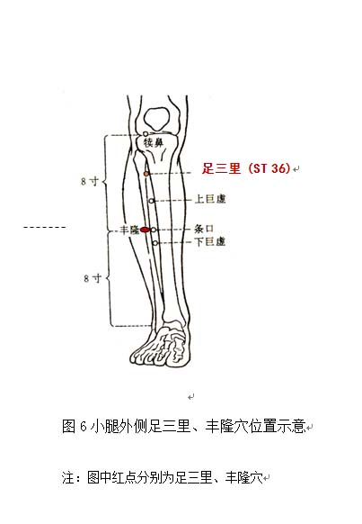

痰湿质调理方法
1. 调体专用产品
【名称】轻燕饮
【食用方法】每次1-2袋，以适量温开水冲调食用，每天2次。
2. 情志调摄
宜多参加社会活动，培养广泛的兴趣爱好。
宜欣赏激进、振奋的音乐，如二胡《赛马》等。
3. 饮食调养
宜选用健脾助运、祛湿化痰的食物，如冬瓜、白萝卜、薏苡仁、赤小豆、荷叶、山楂、生姜、荠菜、紫菜、海带、鲫鱼、鲤鱼、鲈鱼、文蛤等。
少食肥、甜、油、黏（腻）的食物。
参考食疗方：（1）荷叶粥：干荷叶、大米，具有祛湿降浊的功效，适合痰湿体质者食用。
（2）冬瓜海带薏米排骨汤：冬瓜、海带、薏米、猪排骨（少量）、生姜，具有健脾祛湿、化痰消浊的功效，适合痰湿体质腹部肥满者食用。
4. 起居调摄
居住环境宜干燥，不宜潮湿，穿衣面料以棉、麻、丝等透气散湿的天然纤维为佳，尽量保持宽松，有利于汗液蒸发，祛除体内湿气。
晚上睡觉枕头不宜过高，防止打鼾加重；早睡早起，不要过于安逸，勿贪恋床榻。
5. 运动保健
坚持长期运动锻炼，强度应根据自身的状况循序渐进。不宜在阴雨季节、天气湿冷的气候条件下运动。
可选择快走、武术以及打羽毛球等，使松弛的肌肉逐渐变得结实、致密。如果体重过重、膝盖受损，可选择游泳。
6. 穴位保健
（1）选穴：丰隆、足三里。
（2）定位：足三里位于小腿前外侧，当犊鼻下3寸，距胫骨前缘一横指处（见图6）。丰隆位于小腿前外侧，当外踝尖上8寸，条口外，距胫骨前缘二横指处（见图6）。
（3）操作：采用指揉法。用大拇指或中指指腹按压穴位，做轻柔缓和的环旋活动，以穴位感到酸胀为度，按揉2～3分钟。每天操作1～2次。
